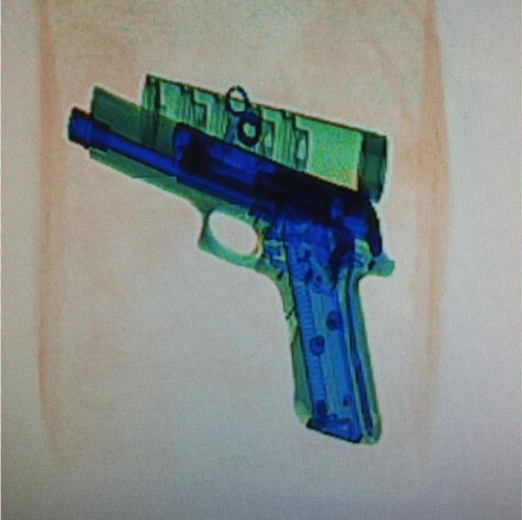
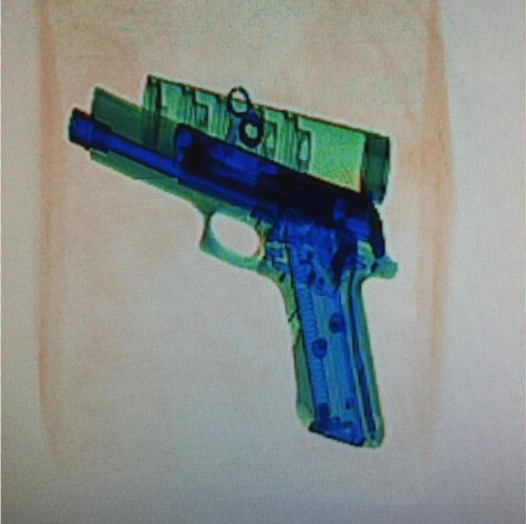

German Customs Bust a Darkweb Gun Vendor and Seize Five Guns
~1 min read | Published on 2018-11-27, tagged Arrested, Darkweb-Vendor, Firearms, General-News using 224 words.
The Customs Investigations Office in Frankfurt led an investigation into several men allegedly associated with illegal weapons sales on the darkweb after seizing five different firearms and assorted ammunition.
The Press Release
Investigators with the Customs Investigations Office Frankfurt am Main have succeeded in ending illegal arms trade on the darknet again. The investigations targeted four separate suspects from France, Saxony, North Rhine-Westphalia and Hesse. In total, the investigators secured 2 pistols, 2 revolvers, a pump gun, 124 rounds of ammunition, 2 kg of propellant, and cartridge ammunition components and tools.

The [primary conspirator] is a 49-year-old French citizen who is in custody on a warrant filed by the Attorney General’s Office in Frankfurt am Main. He is accused of having sold, in at least three cases, weapons and ammunition subject to authorization from business dealings via the Darknet. His arrest took place on 24.10.2018, after he had given up ammunition for dispatch in a post office in the Ortenaukreis.
The customs investigators were able to identify as customers a total of three men, from Saxony (a short weapon), from North Rhine-Westphalia (one long and short weapon with ammunition) and from Hesse (two short weapons). They were released after their interrogation and the search of their apartment.
Evidence of a terrorist background is not available from the current perspective.
Source: presseportal.de
The Press Release
Investigators with the Customs Investigations Office Frankfurt am Main have succeeded in ending illegal arms trade on the darknet again. The investigations targeted four separate suspects from France, Saxony, North Rhine-Westphalia and Hesse. In total, the investigators secured 2 pistols, 2 revolvers, a pump gun, 124 rounds of ammunition, 2 kg of propellant, and cartridge ammunition components and tools.

A Picture of a Gun in a Customs Scanner
The [primary conspirator] is a 49-year-old French citizen who is in custody on a warrant filed by the Attorney General’s Office in Frankfurt am Main. He is accused of having sold, in at least three cases, weapons and ammunition subject to authorization from business dealings via the Darknet. His arrest took place on 24.10.2018, after he had given up ammunition for dispatch in a post office in the Ortenaukreis.
The customs investigators were able to identify as customers a total of three men, from Saxony (a short weapon), from North Rhine-Westphalia (one long and short weapon with ammunition) and from Hesse (two short weapons). They were released after their interrogation and the search of their apartment.
Evidence of a terrorist background is not available from the current perspective.
Source: presseportal.de